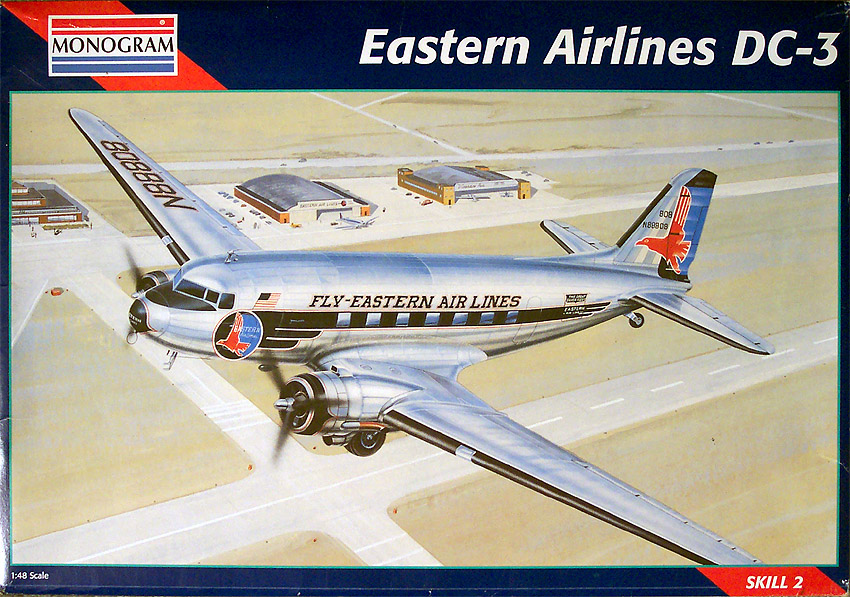
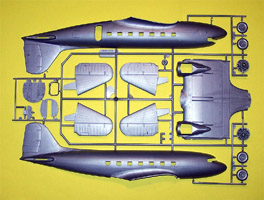
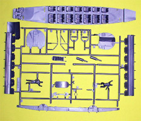
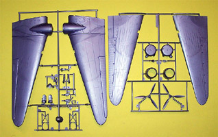
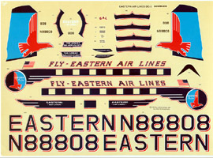
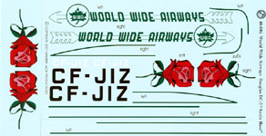

{kind=link}
{kind=link}
{kind=link}
{kind=link}
{kind=link}
{kind=link}


Revell-Monogram 1/48 Douglas DC-3

Kit #5610
Collector’s Market Value $45.00
Images and text Copyright © 2005 by Matt Swan
Developmental Background
Gooney Bird, Dakota, C-47, RD4, DC-3. It does not matter what you care to name it but the same image of a stubby twin engined aircraft comes to mind every time. I believe that this aircraft designed and produced by Douglas in the 1930s was a milestone in aviation history. This was the aircraft that really made passenger air travel practical. Not only was it important for passenger service but also made it affordable to transport goods and equipment by air and by 1942 eighty percent of the nations airlines were operating DC-3s. The aircraft was not only economical but was extremely reliable. I recall a story told to me about a C-47 (the military version of the DC-3) traveling over the ‘Hump’ during WW2. Weather was terrible (of course) and visibility was near zero. The pilot was threading his way through the mountains and hit heavy turbulence, such that he feared being slammed directly into the mountain wall. The craft survived the trip and made it to its destination where it was discovered that nearly one third of the starboard wing was gone from an impact with the mountain wall. Now that is reliability!
The DC-3 was manufactured with twin 1000 hp Wright Cyclone R-1820 12 cylinder air cooled engines or 14 cylinder Pratt and Whitney Twin Wasp R-1830 engines. A maximum speed of 215 mph was possible with a standard cruise speed of 180 mph and a range of 1510 miles. This was not a pressurized aircraft so normal operating altitudes were less than 10,000 feet. It was not the largest or the fastest aircraft at the time but its combination of economy and reliability resulted in an average cost of four cents per mile to operate verses the then standard of seven cents per mile. All this by itself would have been enough to ensure the aircrafts place in history but the advent of WW2 and the DC-3s induction into military service brought even more fame and glory to the craft.
Operation Market Garden, the invasion of Europe. Here so many fighting men traveled into danger aboard the C-47, so many perished when their aircraft were destroyed by enemy action. The type was used to tow gliders, drop supplies, extract wounded. Some were fitted with floats, others with skis and others outfitted as flying gunships to support ground troops. The aircraft was pressed into service in every theater of action during the war. It seemed like the aircrafts diversity could see no end. In 1956 a Navy C-47 named Que Sera Sera became the first aircraft to land at the South Pole. Even today hundreds of the type continue to operate around the world in both passenger and cargo roles.
The Kit
This model comes in a big box, yes indeed. It is the same size box that the B-17 or B-24 kit comes in. Before I get too deeply into this let me specify that the kit I am looking at is a 1992 release of the model. Rumor has it that this and the C-47 version are on Monogram’s reissue list for the near future and they may include different decals and possible a different quality of plastic. Inside the box are four trees of parts done in a silver, high pressure injection polystyrene and a single tree of clear parts. The silver parts all feature raised panel lines and some recessed hinge lines and door seams. Flow marks are evident within the plastic but this will not detract from the final look of the model. There is some light flash in places; after all, these molds are getting a bit long of tooth. Engines are provided as faces only and wheels are not weighted. Unlike the C-47 version this one does not have the astrodome opening molded in the fuselage.
Interior details are good with detailed bulkheads and a large passenger floor pan with seats molded in place. The instrument panel features raised details and looks okay if painted straight from the box – chances are you won’t be able to see it anyway once the model is built. Inner cabin walls are provided as separate pieces with cute little curtains and overhead storage bins. The kit includes a heavy wing spar with some landing gear details molded in place. This piece will be handy when constructing the wing which is comprised of five individual panels that fit around the main spar. This also gives the model good structural strength should the modeler decide to do things like add electric motors, lights and batteries to the kit. All control surfaces and molded in the neutral position, flaps are up and cowl flaps are closed. The passenger access door is able to be modeled open but the crew access door is not. I have found that if you choose to cut out the crew door it does match fairly well with the interior components like floor and bulkheads. Landing gear detail is adequate but would not suffer from some AMS (Advanced Modeler Syndrome) detailing. We also get a couple of crew members with the kit – two standard Monogram ground crew figures and a standing pilot.
Okay, inventory time; we have sixty-two silver plastic pieces and six clear parts (one of those is an astrodome for the C-47) for a total of sixty-eight pieces in the box.



You may click on the small images above to view larger pictures.
Decals and Instructions
Instructions with this release of the kit come on a single A-2 sized sheet printed front and back. It includes a short history of the aircraft along with basic safety instructions and a paint code chart. Paints are listed by color name only, no FS numbers or paint manufacture numbers are given.


There are twenty-seven exploded view construction steps with occasional building and painting tips scattered throughout. There is also a top and a side view of the model for decal placement.
The kit decals come as a large sheet intended to mark one Eastern Airlines passenger plane. The decals are well made with good color density and print registry. They look good and I have seen more than one model of this aircraft with these markings and they have all looked very nice. There is absolutely nothing wrong with these decals but …. I am not the sort to leave it at that. I need something different and Whiskey Jack Productions has what I’m looking for – the Artic Rose. You can click on either of the small images here to see full sized pictures of the kit decals and the Whiskey Jack decals.
Conclusions
This is a historically significant aircraft and any serious model collector should have at least one. The raised panel lines may be an issue for some but should not prevent you from looking seriously at this model. The parts fit together fairly well, the instructions are clear and to the point, the decals are adequate for the one bird shown on the box. On the down side the decals are for only one aircraft so you need to look to the aftermarket for anything different. Fortunately there are lots of aftermarket choices from places such as Whiskey Jack Productions or Meteor Productions just to name two. There are just a few items on the aftermarket for these right now like bulged and flattened wheels from True Details and replacement engine faces from Engines and Things. When this kit and its military cousin the C-47 are reissued I’m certain we will see a sudden resurgence of more aftermarket goodies. The kit builds up very nicely right from the box but also provides an excellent base for modification like scribing the panel lines or adding electric motors or including LEDs to light the interior or the landing lights (all this I’ve seen done before). If you should have the opportunity to acquire one of these kits I would strongly suggest that you do just that – buy it.